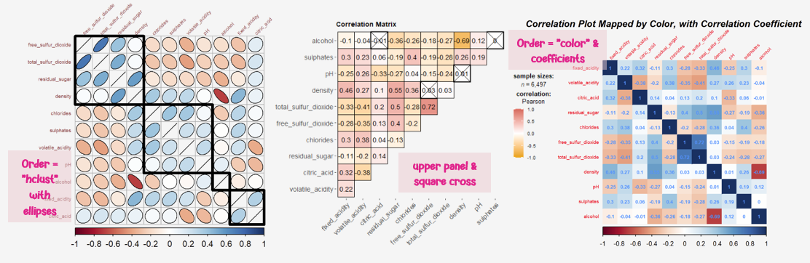
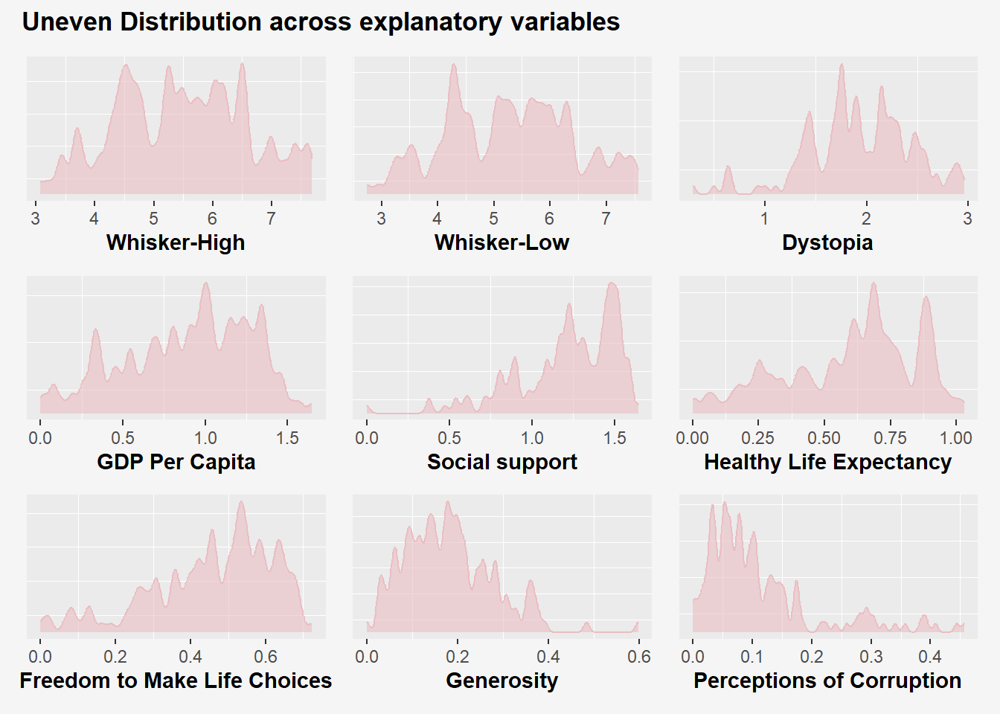

pacman::p_load(seriation, dendextend, heatmaply,
tidyverse, ggridges)Hands-on Exercise 5c: Heatmap for Visualising and Analysing Multivariate Data

1 Overview
Heatmaps visualise data through variations in colouring. When applied to a tabular format, heatmaps are useful for cross-examining multivariate data, through placing variables in the columns and observation (or records) in rows and colouring the cells within the table. Heatmaps are good for showing variance across multiple variables, revealing any patterns, displaying whether any variables are similar to each other, and for detecting if any correlations exist in-between them.
In this hands-on exercise, we will gain hands-on experience on using R to plot static and interactive heatmap for visualising and analysing multivariate data.
2 Getting Starting
In this hands-on exercise, the data of World Happiness 2018 report will be used. The data set is downloaded from here. The original data set is in Microsoft Excel format. It has been extracted and saved in csv file called WHData-2018.csv.
wh <- read_csv("data/WHData-2018.csv")The output is a tibble data frame called wh, with 156 observations (rows) across 12 variables (columns).
glimpse(wh)Rows: 156
Columns: 12
$ Country <chr> "Albania", "Bosnia and Herzegovina", "B…
$ Region <chr> "Central and Eastern Europe", "Central …
$ `Happiness score` <dbl> 4.586, 5.129, 4.933, 5.321, 6.711, 5.73…
$ `Whisker-high` <dbl> 4.695, 5.224, 5.022, 5.398, 6.783, 5.81…
$ `Whisker-low` <dbl> 4.477, 5.035, 4.844, 5.244, 6.639, 5.66…
$ Dystopia <dbl> 1.462, 1.883, 1.219, 1.769, 2.494, 1.45…
$ `GDP per capita` <dbl> 0.916, 0.915, 1.054, 1.115, 1.233, 1.20…
$ `Social support` <dbl> 0.817, 1.078, 1.515, 1.161, 1.489, 1.53…
$ `Healthy life expectancy` <dbl> 0.790, 0.758, 0.712, 0.737, 0.854, 0.73…
$ `Freedom to make life choices` <dbl> 0.419, 0.280, 0.359, 0.380, 0.543, 0.55…
$ Generosity <dbl> 0.149, 0.216, 0.064, 0.120, 0.064, 0.08…
$ `Perceptions of corruption` <dbl> 0.032, 0.000, 0.009, 0.039, 0.034, 0.17…# Calculate Median and Mean values for plotting normal curve
med_hs <- median(wh$`Happiness score`)
mean_hs <- mean(wh$`Happiness score`)
std_hs <- sd(wh$`Happiness score`)
ggplot(
wh,
aes(x = `Happiness score`)
) +
geom_density(
color = "#d18a7d",
fill = "#d18a7d",
# Adjust bandwidth to reduce smoothness of density plot to reveal variations
adjust = .2,
alpha = .6
) +
# Plot normal curve
stat_function(
fun = dnorm,
args = list(mean = mean_hs,
sd = std_hs),
col = "#65666a",
size = .6
) +
labs(
title = "Uneven Distribution of Happiness Scores",
subtitle = "Median joviality score is close to Mean score, but distribution density reveals multiple peaks and troughs",
x = "Happiness Score"
) +
theme(
axis.title.y = element_blank(),
axis.text.y = element_blank(),
panel.grid.major = element_blank(),
plot.background = element_rect(fill="#f5f5f5",colour="#f5f5f5")
)
Step 1: Changing Row Names
Next, we need to change the rows by country name instead of row number by using the code chunk below.
row.names(wh) <- wh$CountryStep 2: Transforming the data frame into a matrix
The data was loaded into a data frame, but it has to be a data matrix to make your heatmap.
The code chunk below will be used to transform wh data frame into a data matrix.
wh1 <- dplyr::select(wh, c(3, 7:12))
wh_matrix <- data.matrix(wh) #Transforms categorial variable into numerical representations.3 Static Heatmap
There are many R packages and functions can be used to drawing static heatmaps, they are:
heatmap() of R stats package for simple heatmaps.
heatmap.2() of gplots R package for enhanced heatmaps.
pheatmap() of pheatmap R package. pheatmap package also known as Pretty Heatmap. The package provides functions to draws pretty heatmaps and provides more control to change the appearance of heatmaps.
ComplexHeatmap package of R/Bioconductor package. The package draws, annotates and arranges complex heatmaps (very useful for genomic data analysis). Full reference guide of the package is available here.
superheat package: A Graphical Tool for Exploring Complex Datasets Using Heatmaps. A system for generating extendable and customizable heatmaps for exploring complex datasets, including big data and data with multiple data types. The full reference guide of the package is available here.
4 heatmap() of R Stats
par(bg = "#f5f5f5")
wh_heatmap <- heatmap(wh_matrix,
Rowv=NA, Colv=NA)
Notes from Code Chunk
By default, heatmap() plots a cluster heatmap. The arguments Rowv=NA and Colv=NA are used to switch off the option of plotting the row and column dendrograms.
par(bg = "#f5f5f5")
wh_heatmap <- heatmap(wh_matrix)Notes from Code Chunk - The order of both rows and columns is different compare to the native wh_matrix. This is because heatmap do a reordering using clusterisation: it calculates the distance between each pair of rows and columns and try to order them by similarity. Moreover, the corresponding dendrogram are provided beside the heatmap.
Insights - Here, red cells denotes small values, and red small ones. This heatmap is not really informative. Indeed, the Happiness Score variable have relatively higher values, what makes that the other variables with small values all look the same. Thus, we need to normalize this matrix. This is done using the scale argument. It can be applied to rows or to columns following your needs.
8 Reference
- Kam, T.S. (2023). Visual Correlation Analysis.